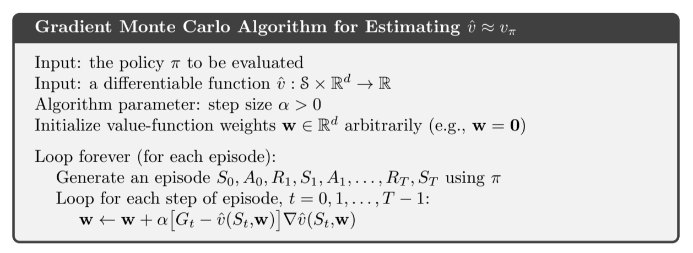
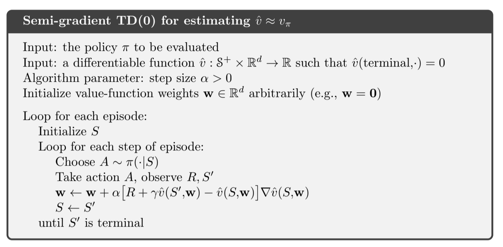
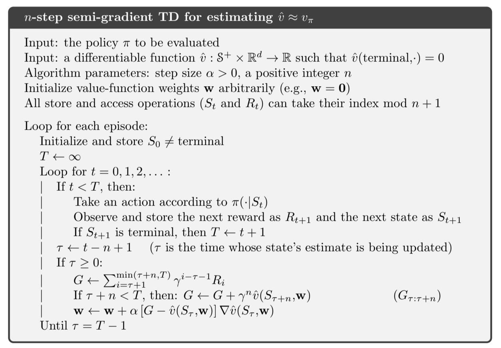
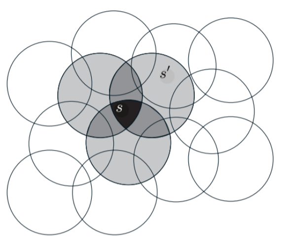
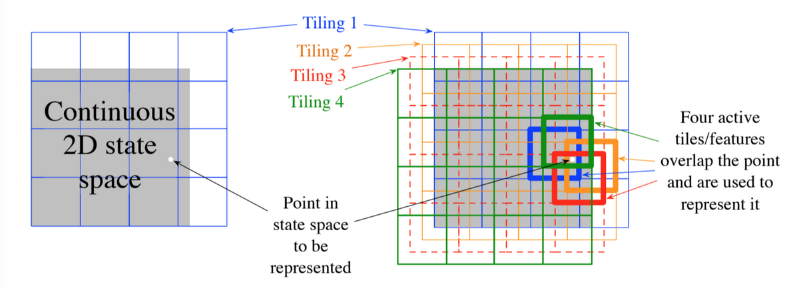
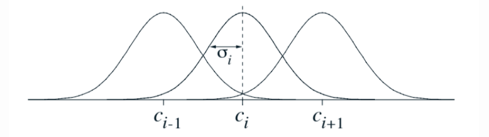

Wait for the whole episode
Gt = Rt+1 + γRt+2 + γ²Rt+3 + …
Add up the rewards until the episode ends. This return is one sample of the state’s value; different episodes can give different returns. There is no guessed value at the end.
Start with the core ideas. Open examples, derivations, and algorithms whenever you need more detail.
Imagine a robot following a fixed rule for moving toward an exit. From its current location, how much reward should it expect to collect? That is the prediction problem. A state’s value is its expected future reward, with later rewards discounted if γ < 1.
On-policy means we learn about the same policy the robot follows to collect experience. We keep that policy fixed here; our job is to estimate its values.
A table stores a separate value for every state. But if position and speed can take any real number, the robot can encounter endlessly many states. We need a way to make predictions without storing every possible state.
A feature is a useful description of a state, such as its distance d from the exit. A simple model could predict v̂(s, w) = w₀ + w₁d. If w₀ = 10 and w₁ = −1, it predicts 8 at distance 2 and 7 at distance 3. These are example predictions, not known true values.
Learning adjusts the two weights from rewards. Changing them changes predictions at many distances at once. This sharing is called generalization: experience at one state can help us predict at another. It can also introduce errors when states that share a prediction rule need different values.
A linear model is one choice; neural networks and decision trees are others. Throughout this chapter, vπ(s) means the true expected value under policy π, and v̂(s, w) means our estimate. We write V(s) as a shorter name for the current estimate below.
Core idea: A function approximator shares what it learns across states.
In prediction, an agent tries to estimate how good a state is under a fixed policy. We call that estimate V(s). Every update follows the same basic idea:
The learning rule stays almost the same. What changes is how much future information we use to make the target.
Notation: St is the state now; Rt+1 is the next reward. γ is the discount factor, between 0 and 1. Bootstrapping means using a current value estimate to fill in rewards we have not observed yet.
Add up the rewards until the episode ends. This return is one sample of the state’s value; different episodes can give different returns. There is no guessed value at the end.
Use the reward we just saw, then add our current guess for the next state. This gives feedback quickly.
Use several real rewards before bootstrapping from a prediction. It sits between TD(0) and MC.
Use a model to average over possible actions, next states, and rewards. π(a|s) gives the chance of choosing action a, and p gives the chance of its outcome. DP still bootstraps from current value estimates.
At a terminal state, the remaining value is zero. For n-step TD, if the episode ends before n steps, stop the reward sum there and leave out the final value estimate.
For example, if V(s) = 4, the target is 7, and α = 0.1, the new estimate is 4 + 0.1 × (7 − 4) = 4.3. We move partway toward the target because one experience need not tell the whole story.
| Tabular prediction | Function approximation |
|---|---|
| Keep one separate number for every state. | Use a function V(s; w) that produces a value from features of the state. |
| Update only the visited state. | Update the function’s parameters w. |
| Learning one state usually does not change another. | Learning one state can change predictions for many similar states. |
| Works well when the state set is small. | Helps when there are too many states to store—or states are continuous. |
Now we change weights instead of a table entry. The error tells us whether the prediction should rise or fall. The gradient ∇wV tells us how each weight affects that prediction.
Imagine a robot learning the value of locations in a large maze. Instead of memorizing every square, it uses features such as “near the goal,” “has a wall on the left,” and “distance to the exit.”
For a single time step, reinforcement learning can look surprisingly familiar:
Observe state St
Build target Yt
Compare Yt with V(St)
Reduce the error
The state features, such as position, speed, or pixels.
The RL target: a return, a one-step bootstrapped value, an n-step return, or a model-based target.
The robot can update its model during interaction, without saving every past observation. TD(0) can learn after one transition; n-step TD waits for several rewards; MC waits until the return is available. This makes incremental learning useful when experience keeps arriving and memory is limited.
Batch learning waits for a collection of examples and then trains on them together. It can be efficient, but it reacts more slowly to new information.
Core idea: Measure prediction quality using squared true-value errors, weighted by state importance.
Suppose our robot uses a model too simple to fit every state exactly. Adjusting its weights may improve some states and worsen others. We need a score that compares the overall quality of two sets of weights.
Read this from the inside out: find the prediction error in each state, square it, multiply by the state’s weight μ(s), then add the results. Squaring keeps positive and negative errors from cancelling. Lower V̄E means better predictions according to this score.
Suppose state A accounts for 80% of visits and B for 20%. The true values and current predictions are:
| State | μ(s) | True value | Prediction | Squared error | Weighted error |
|---|---|---|---|---|---|
| A | 0.8 | 10 | 8 | (10 − 8)² = 4 | 0.8 × 4 = 3.2 |
| B | 0.2 | 4 | 6 | (4 − 6)² = 4 | 0.2 × 4 = 0.8 |
The total is V̄E = 3.2 + 0.8 = 4. Both predictions are wrong by 2, but A contributes more because it is visited more often. If a shared-weight change reduces A’s squared error from 4 to 1 while increasing B’s from 4 to 9, the score becomes 0.8 × 1 + 0.2 × 9 = 2.6. Overall error falls even though B gets worse.
The weights satisfy μ(s) ≥ 0 and Σs μ(s) = 1. A common choice is the fraction of time the agent spends in each state while following π: the on-policy distribution. Frequently visited states then count more in the score.
For a continuing task, we use the long-run state frequencies when a suitable stationary distribution exists. For an episodic task, count expected visits to each nonterminal state over an episode and normalize:
Here, η(s) is the expected number of visits to state s per episode. If the average counts are 4 visits to A and 1 to B, their weights are 4/5 and 1/5—the 0.8 and 0.2 above.
A visit happens either because an episode starts in s, with probability h(s), or because the agent arrives from another nonterminal state s̄. The second term adds up those arrivals under π. This assumes episodes have finite expected visit counts; discounted visitation uses an additional γ factor on arrivals.
Ideally, we find weights with the smallest possible V̄E: a global minimum. A more complex model may reach a local minimum, where nearby weight changes do not improve the score even though a better solution exists elsewhere.
Weighted squared error is a useful prediction objective. But a lower prediction error alone does not guarantee a better policy: errors that change an action choice can matter differently from other errors. For now, we evaluate predictions under the fixed policy π.
Core idea: Adjust weights using target error × prediction gradient; TD holds its bootstrapped target fixed.
Section 9.2 defined the goal: make predictions close to the true values. Now we need a practical way to adjust the weights using the experience we collect.
Assume our value function is differentiable: we can calculate how changing each weight changes its prediction. If the true value were available, one update would be:
This is the squared-error update derived below. The subscript t means “before this update”; t+1 means “after it.” Stochastic means we learn from a sampled example rather than calculating an average over every state.
We rarely know vπ(St). Use an available target Ut in its place:
The choice of Ut determines which learning method we get: MC uses the observed return; TD uses the next reward plus a next-state prediction. MC takes a gradient step on its return loss. TD holds its target fixed, giving a semi-gradient step.
It comes from gradient descent on squared prediction error. Ideally, we would train on the true value vπ(s). But that value is usually unknown—it is what we are trying to learn. Instead, we use U, a target that estimates the unknown true value for this learning example.
U is generally not the true value vπ(s). An MC return is a noisy sample whose expectation under π is the true value; a TD target can also be biased by errors in the next-state estimate.
With U as the target and v̂(s, w) as the prediction, the loss for this example is:
The factor ½ just simplifies the derivative. Gradient descent takes a small step opposite the loss gradient, toward lower error:
Hold U fixed while differentiating. By the chain rule, the square contributes twice the error, and differentiating −v̂ contributes a minus sign:
Substitute this derivative into gradient descent. The two minus signs cancel, giving the weight update:
A one-weight example: let v̂(s, w) = wx, where x is a feature. Its derivative with respect to w is x, so the update becomes w ← w + α(U − wx)x. If x = 2, w = 1, U = 4, and α = 0.1, the prediction starts at 2. The new weight is 1 + 0.1 × (4 − 2) × 2 = 1.4, making the new prediction 2.8—closer to 4.

Finish the episode, calculate its returns, and use each visited state with its return as a training example. The return does not depend on the prediction weights. Its noise comes from the sampled trajectory.
TD(0) builds its target immediately after a transition:
δt is the TD error. At a terminal next state, set its value to zero.

For one fixed transition, differentiating the entire squared TD error would give:
Semi-gradient TD omits the next-state derivative term. This full derivative describes a different update; it is not the gradient of the true-value objective V̄E either.
One transition: reward = 2, γ = 0.9, next-state prediction = 5, current prediction = 4. Then Ut = 2 + 0.9 × 5 = 6.5, and δt = 2.5. If the current prediction is wx with x = 2 and w = 2, its gradient is 2. With α = 0.1, the new weight is 2 + 0.1 × 2.5 × 2 = 2.5.
n-step TD and model-based bootstrapped targets use the same idea when we hold their targets fixed during differentiation.
| Question | Gradient MC | Semi-gradient TD(0) |
|---|---|---|
| When can it update? | Once the episode return is available | After one transition |
| Does the target use current estimates? | No | Yes, unless the next state is terminal |
| Connection to V̄E | Expected updates follow its negative gradient under matching state sampling | Does not generally minimize V̄E directly |
Learning-rate and model assumptions matter for convergence. Semi-gradient TD has useful guarantees for on-policy linear approximation, which Section 9.4 explores; arbitrary nonlinear models do not inherit those guarantees automatically.
Group states into buckets and give each bucket one weight. If states A and B are in bucket 1, both predict v̂(s, w) = w₁. The gradient is 1 for that bucket’s weight and 0 for every other weight:
If w₁ = 4, U = 8, and α = 0.25, the new weight is 5. Both A and B now predict 5, even if only A supplied the example. Other buckets stay unchanged. This makes generalization easy to see, but states within a bucket cannot have different predictions.
Reading sequence: Chapter 9 reference blog, Section 9.3. Examples and derivations here are explained in our own notation.
We have a general weight update. Now choose a particularly simple prediction rule: describe each state with numbers called features, multiply each feature by a weight, and add the results.
x(s) is the feature vector, w is a vector of the same length, and wᵀx is their dot product. Features describe the state; weights are learned. The features stay fixed while we learn these weights.
For the robot, use two features: a constant 1 and distance to the exit. At distance 2, let x(s) = [1, 2]ᵀ and w = [10, −1]ᵀ:
The constant feature lets the first weight set a baseline. The second weight controls how distance changes the prediction.
In the sum w₁x₁ + w₂x₂ + …, differentiating with respect to wᵢ leaves xᵢ. So the whole gradient is just the feature vector:
One update: continue with x = [1, 2]ᵀ, w = [10, −1]ᵀ, target U = 9, and α = 0.1. The error is 9 − 8 = 1. Add 0.1 × 1 × [1, 2]ᵀ to the weights, giving [10.1, −0.8]ᵀ. The prediction becomes 10.1 − 0.8 × 2 = 8.5, closer to 9.
The change also affects other distances. At distance 3, the prediction changes from 7 to 7.7. This is generalization through shared features; whether it helps depends on the true values there.
For TD(0), write xt = x(St). Substituting the one-step target gives:
With on-policy sampling, suitable independent features, finite moments, and standard diminishing step sizes, linear TD(0) converges under the usual task assumptions. Its destination is the TD fixed point, which generally differs from the weights minimizing V̄E. A small constant step size usually keeps learning near the solution rather than giving exact convergence.
For the continuing task in steady state, collect the expected update into two quantities:
At equilibrium, the average change is zero. Thus AwTD = b, or wTD = A⁻¹b when A is invertible. The individual noisy updates need not be zero.
For the discounted continuing on-policy setting covered by the linear TD result, with 0 ≤ γ < 1 and the corresponding stationary state weighting:
If γ = 0.9, the factor is 10. For example, a best achievable error of 0.2 gives an upper bound of 2. This is a worst-case guarantee, not a prediction of the actual error. The bound becomes loose when γ is close to 1 and does not apply unchanged at γ = 1.
Collect n rewards before filling in the remaining future with a prediction. At the time of updating St, use the current weights w to form:
This return assumes n steps remain before termination. If the episode ends sooner, sum only the available rewards and omit the bootstrap term. With n = 1 we recover TD(0); if the return reaches termination, the target is the full MC return.

Reading the loop: t tracks interaction time; τ = t − n + 1 identifies the earlier state being updated. After termination, the algorithm finishes updates for the last few states, even though it takes no more actions.
Core idea: features are the clues we give the value function. They decide what it can notice and which states learn from one another.
The prediction rule stays v̂(s, w) = wᵀx(s). Here we choose x(s); learning then adjusts the weights w. Open a method below for its explanation and figure.
A straight-line prediction may miss useful patterns. Add powers such as distance² to describe curves, or products of features to describe interactions:
Example: if s₁ is position and s₂ is speed, the product s₁s₂ lets the effect of speed depend on position. At position 2 and speed 3, x(s) = [1, 2, 3, 6]ᵀ.
The first feature, 1, supplies a baseline. These transformed inputs can describe a curved relationship while the prediction remains linear in its learned weights.
Imagine laying overlapping circles over a map. Each circle is a feature: 1 if the state is inside it, 0 otherwise. The prediction adds the weights of the circles that contain the state.

Read the figure: learning at s updates the circles containing s. State s′ shares some of those circles, so its prediction changes too. Bigger circles spread learning farther; smaller ones distinguish nearby states more precisely.
Tile coding uses several slightly shifted grids. Each grid is a tiling, and each cell is a tile. A state activates one tile in each tiling.

Read the figure: four tilings give four active tiles for the marked point. Add their weights to predict its value. Nearby points can share tiles, even when one grid places them on opposite sides of a boundary.
Learning changes only the active weights. This keeps each update small and local, even when the full feature vector is large.
Instead of switching a feature on or off, let it fade gradually with distance. A Gaussian RBF is strongest at its center cᵢ and gets weaker farther away:

Read the figure: each bell curve is one feature. Its center sets where it responds most; σᵢ sets how wide its response is. For center 3 and width 1, the activation is 1 at position 3, about 0.61 at position 4, and 0.14 at position 5.
Fixed centers and widths give a linear model in the output weights. Learning centers or widths makes the model nonlinear in those parameters, adding flexibility and computational cost.
Further reading: lcalem’s Section 9.5. Explanations and examples above are written for these notes; screenshots are credited alongside each figure.
V(s) under a fixed policy.